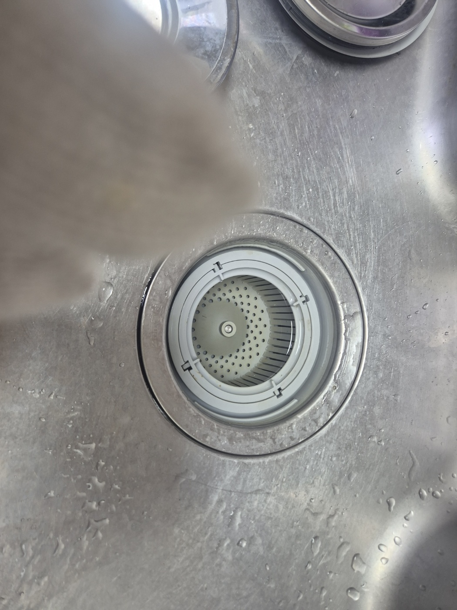
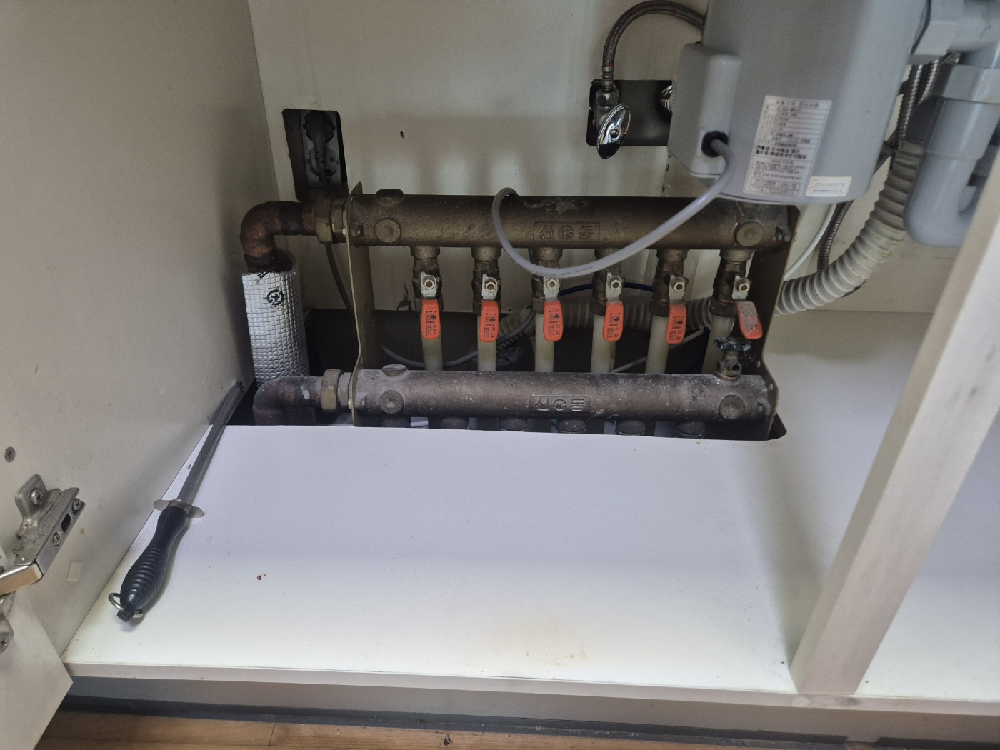
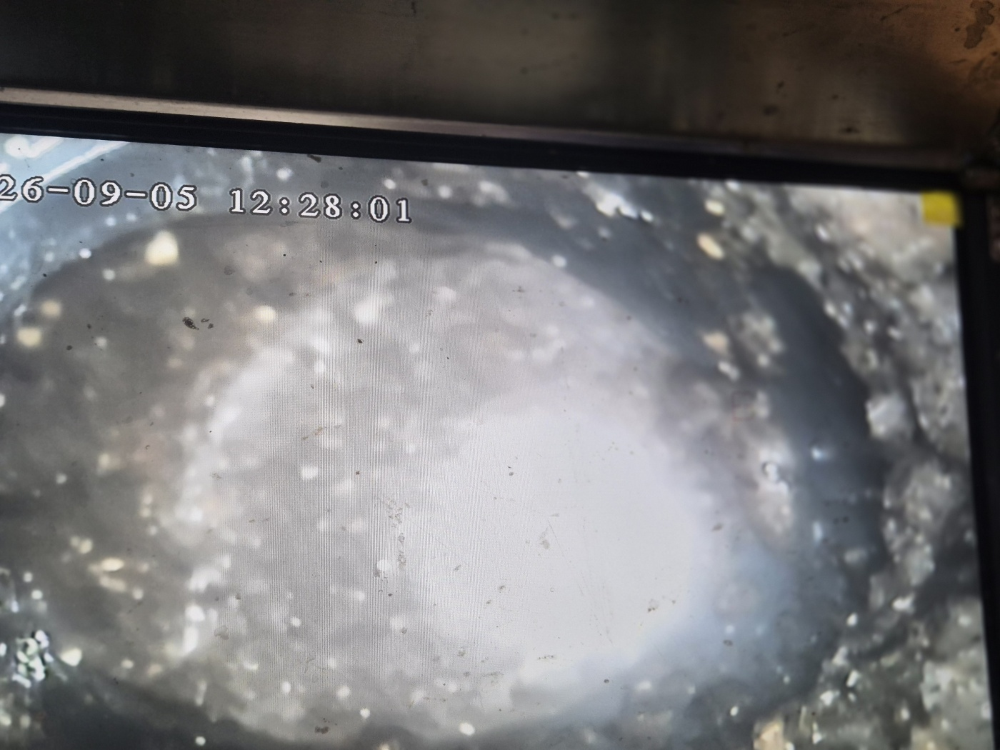
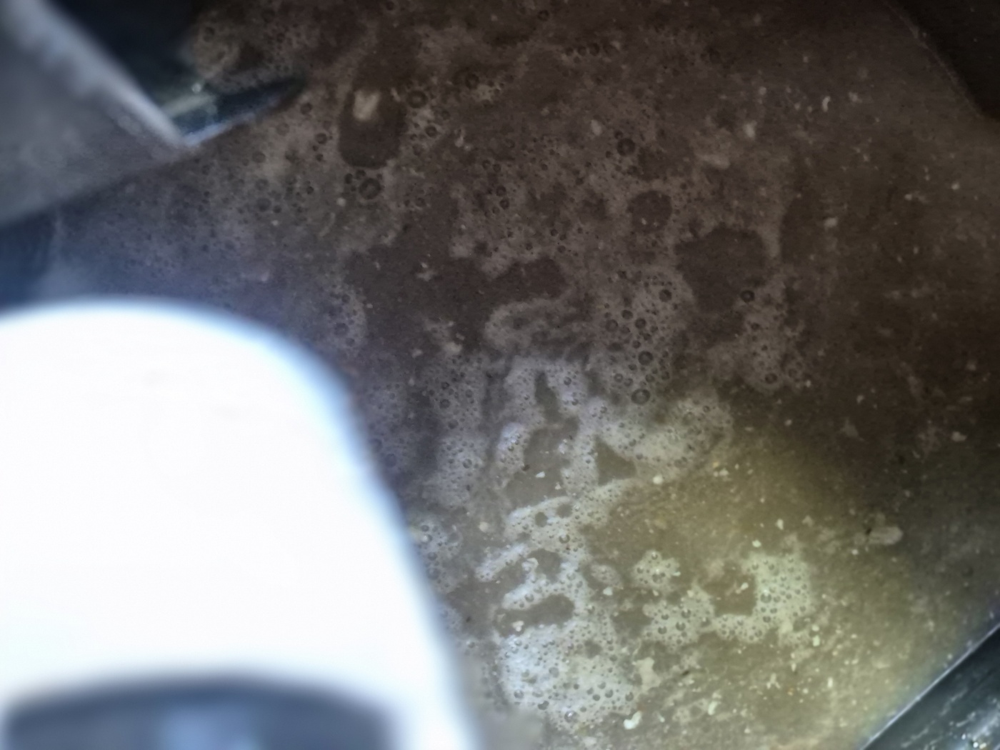
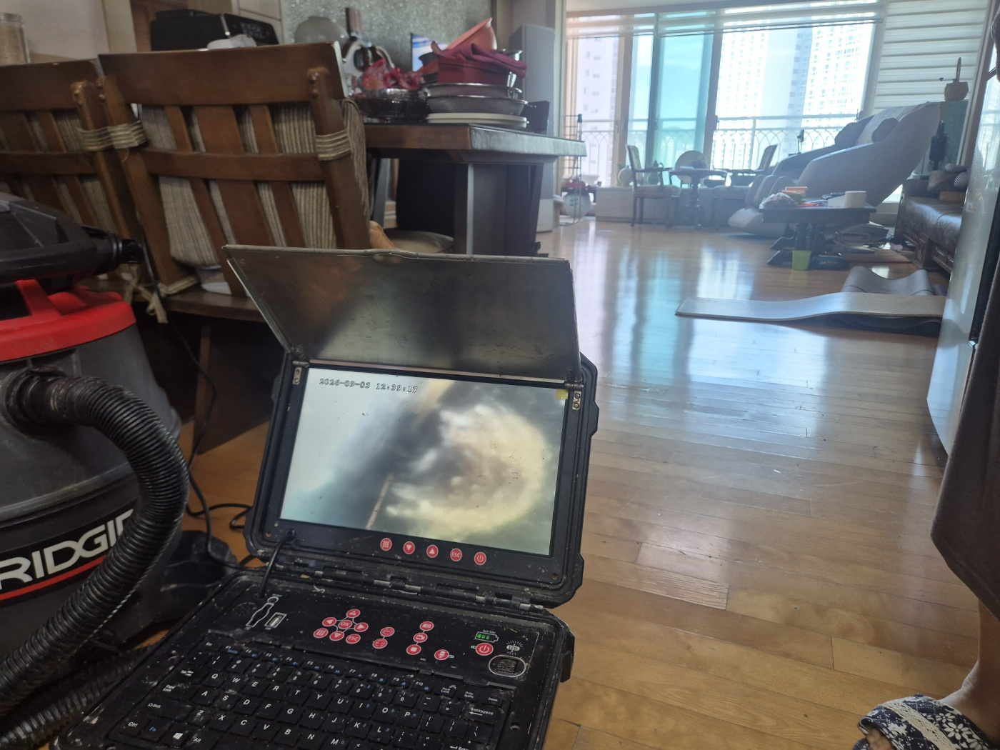
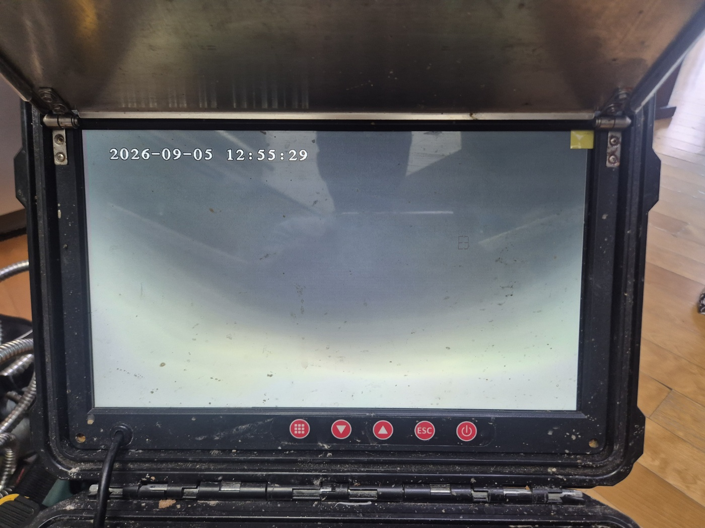

안녕하세요.. 고고고 설비입니다.. 오늘은 안성시 공도읍에 있는 고층 아파트에서 싱크대막힘 신고를 받고 다녀온 현장입니다. 통창으로 시내가 훤히 보이는 고층 세대였는데, 며칠 전부터 설거지물이 서서히 안 빠진다고 하셨어요.
먼저 싱크대 배수구 거름망부터 열어서 상태를 확인했는데, 거름망 자체에는 큰 이상이 없어서 더 안쪽 배관을 살펴보기로 했습니다. 거름망 관리는 잘 되고 있었던 걸 보니 원인이 더 깊숙한 곳에 있다는 판단이 들었어요.
하부장 안쪽 온수 분배기함도 함께 열어서 다른 배관에는 문제가 없는지 점검했습니다. 여러 방으로 이어지는 배관들이 한곳에 모여있어서 하나씩 짚어가며 살펴봐야 했어요.

내시경 카메라를 배관 안쪽으로 넣어보니 화면이 뿌옇게 흐려질 정도로 기름때와 거품이 가득한 게 확인됐습니다. 카메라를 조금 더 밀어 넣자 거품 사이로 누렇게 뭉친 이물질도 함께 보였어요.


배관 라인이 거실 쪽까지 이어져 있어서, 셕션 장비와 내시경을 거실로 옮겨 작업을 이어갔습니다. 고층이라 창밖 풍경이 좋았지만, 좁은 공간에서 장비를 다시 세팅하느라 시간이 조금 더 걸렸어요.

작업을 마치고 다시 한번 내시경으로 확인해보니, 처음보다 화면이 훨씬 맑아진 걸 볼 수 있었습니다. 물을 내려서 배수가 정상적으로 되는 것까지 최종 확인했어요.

고층 아파트는 배관 라인이 길고 여러 세대와 연결돼 있는 경우가 많아서, 한 세대에서 관리를 소홀히 해도 아래층까지 영향을 줄 수 있습니다. 배수가 느려지는 초기 신호가 있을 때 미리 점검받으시는 걸 권해드립니다.
고고고 설비는 주택, 아파트, 원룸, 상가, 공장의 생활 하수 오수 배관을 관리해 주는 업체입니다. 고고고 설비에 전화 주시면 친절상담 정확한 진단 확실한 해결로 보답해 드리겠습니다!!